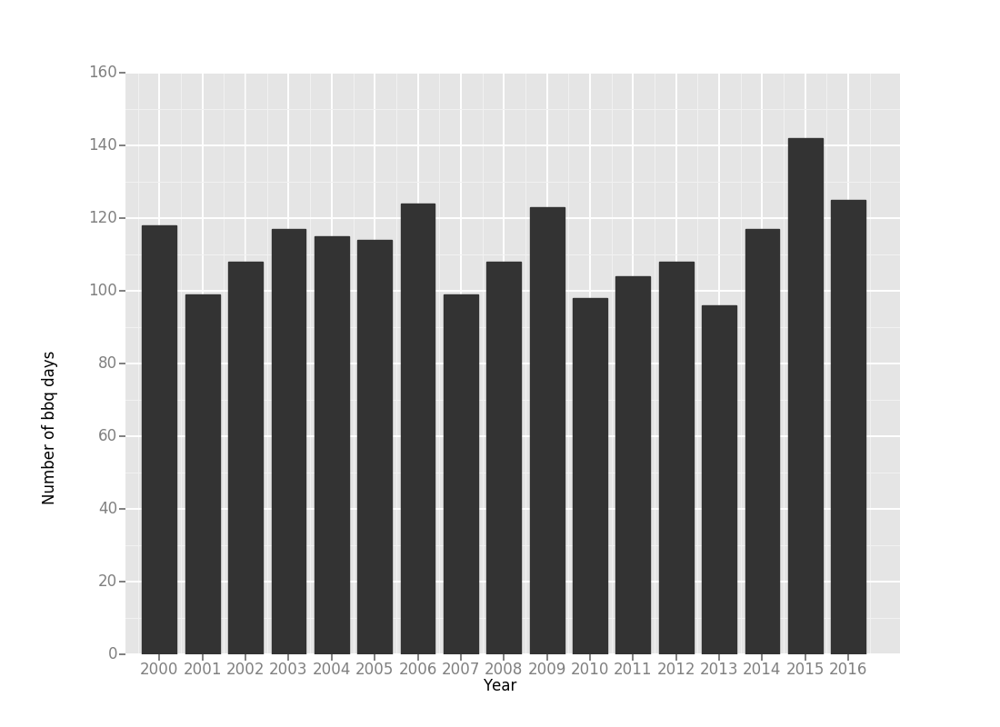
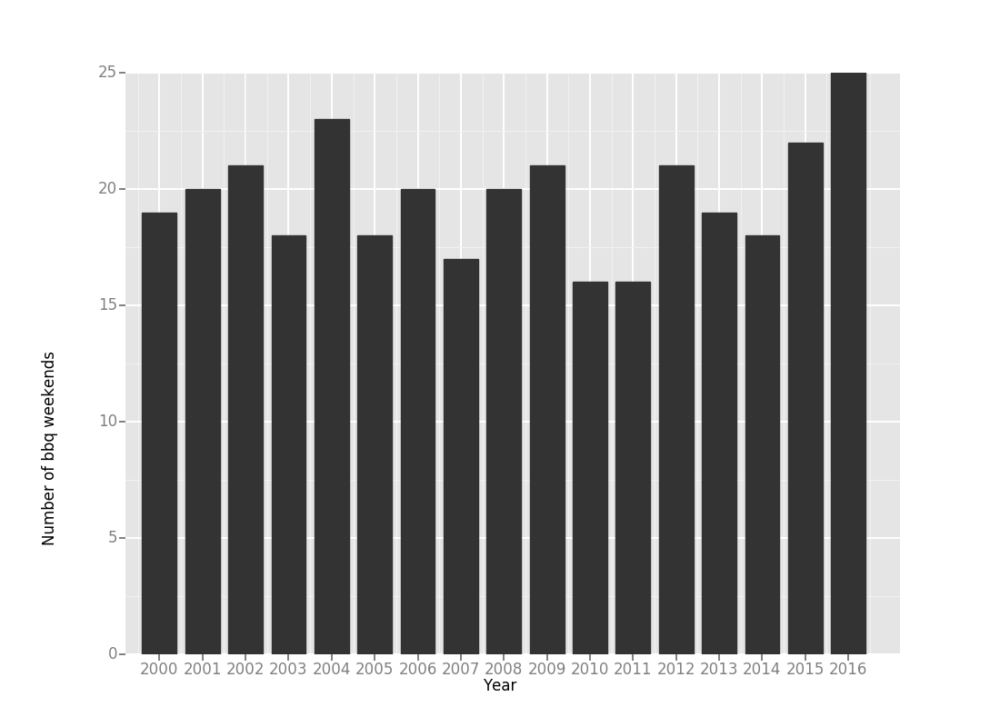
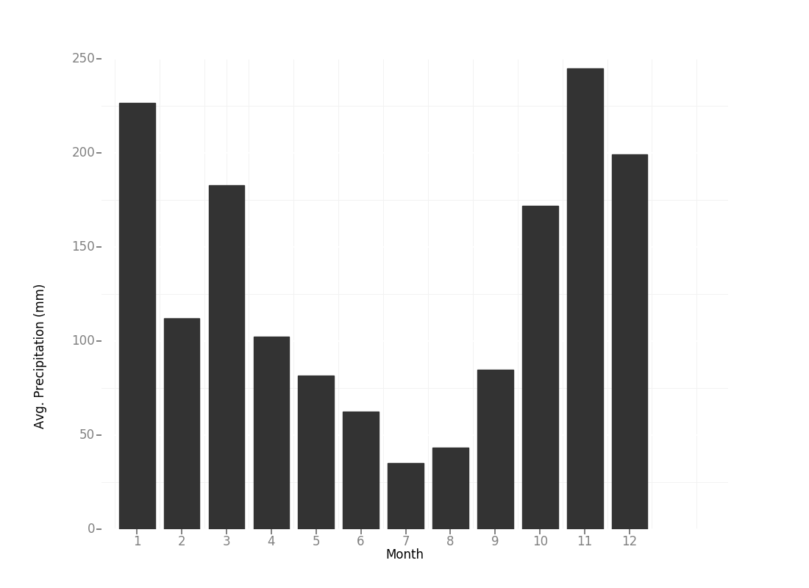
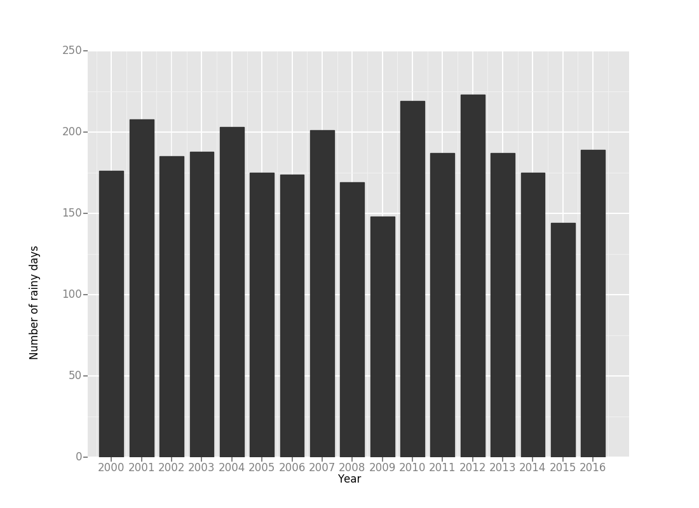
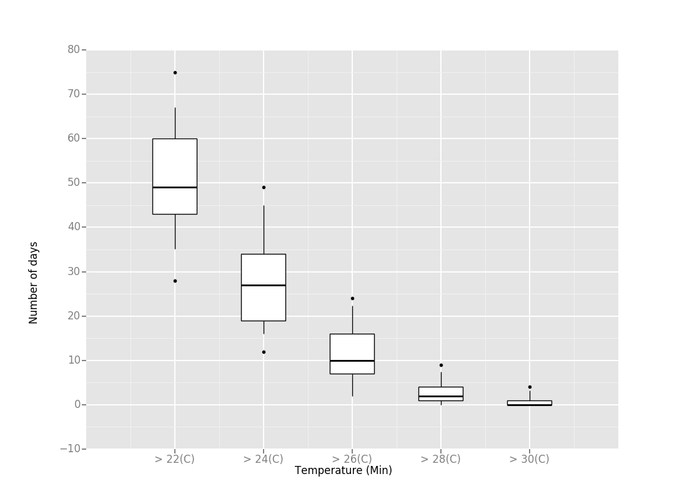

Wed, Apr 12, 2017
It rains a lot in Vancouver. And while your beach-going days will be numbered and cherished there are a surprising number of barbeque days thanks to temperate climate. In fact, since 2000 there have been an average of 112 days per year you can comfortably grill a dead animal outside.
This analysis calculates a barbeque day as a day at or above 15C without rain. These light jacket days define the Northwest, Vancouver in particular. The number of days in this temperate range are also consistent from year to year with 2015 being the only exceptional year.

With so many barbeque days per year, it works out to about 19 weekends per year on average that you can count on decent barbequing weather.

Wed, Apr 12, 2017
From fall to spring Vancouver receives upwards of 1000 mm of precipitation on average and is a legitimately gloomy place to live from October to March. Mercifully, since the bulk of our rain falls between fall and spring, our summers (usually) cannot be beat with often little rain and relatively temperate weather.

All of this rain translates to about 185 days per year with precipitation. In other words we carry an umbrella for half the year. Especially in November. November sucks.

This analysis counts any precipitation as rain. In general this is fair since at lower elevation the snow tends to be wet and miserable anyhow. In fact, I think Vancouver needs a better word for rain. Perhaps a word from another language that translates to abject misery?
Sun, Apr 9, 2017
How many days per year can you comfortably lounge at the beach in Vancouver, BC? We from the Pacific Northwest tend to be optimistic with weather and shed our clothing at the first hint of warmth, while those in equatorial climates have less need for such blind optimism.
This analysis defines a “beach day” as any day without recorded rain and with temperatures above certain given thresholds. To accommodate a range of temperature tolerances the number of beach days is calculated for temperatures between 22C and 30C in 2C increments. Data is for years 2000 to 2016. Box plots show the average number of rainless days above the given thresholds. The reader is left to decide their place in the tolerance range.
My minimum beach-going temperature is 24 degrees and since 2000 there have been an average of 27 clothes-shedding beach lounging days per year. 2015 was an exceptionally warm outlier year with 49 such days. I don’t imagine we’ll be seeing one of those again soon.

Sat, Apr 8, 2017
This is a trick question. The answer is always 365 regardless of climate.